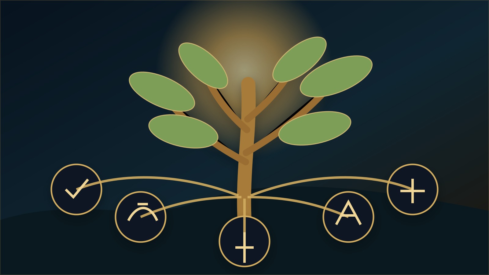

یادداشت تحلیلی · ۱۳ مهر ۱۴۰۵
مشاوره تحصیلی برای تصمیم، نه نسخه آماده
وقتی مسئله تحصیلی پیچیده است، وسوسه یک پاسخ ساده بسیار زیاد میشود؛ یک رشته، یک برنامه، یک تست، یک فرمول. اما تصمیم آموزشی خوب معمولاً از جایی آغاز میشود که به جای فرار از پیچیدگی، آن را درست میبینیم.
مشاوره خوب قرار نیست جای فرد تصمیم بگیرد.
در بسیاری از موقعیتها، دانشآموز و خانواده از مشاور یک پاسخ قطعی میخواهند: «کدام رشته بهتر است؟»، «چه برنامهای بنویسم؟»، «آیا من برای این مسیر استعداد دارم؟». این پرسشها طبیعیاند، اما پاسخ حرفهای همیشه یک واژه یا یک نسخه نیست. گاهی اولین وظیفه مشاور این است که خود پرسش را دقیقتر کند.
اگر دو دانشآموز رتبهای مشابه داشته باشند، الزاماً نباید انتخابی مشابه انجام دهند. تجربه یادگیری، علاقه، میزان پایداری در یک حوزه، شرایط خانواده، امکان جابهجایی، اهداف چند سال آینده، تحمل فشار و حتی معنایی که فرد از موفقیت دارد میتواند تصمیم را تغییر دهد. مشاوره زمانی انسانی و علمی میشود که این تفاوتها را حذف نکند.
شواهد مهماند، اما هیچ شاهدی به تنهایی کافی نیست.
کارنامه
الگوی عملکرد را نشان میدهد، اما توضیح نمیدهد چرا یک درس قوی یا ضعیف بوده است.
آزمون
میتواند داده مفید تولید کند، اما نتیجه آن باید در کنار سایر شواهد تفسیر شود.
علاقه
برای پایداری مسیر مهم است، اما گاهی بر اساس تصویری ناقص از رشته یا شغل شکل گرفته است.
نظر خانواده
اطلاعات مهمی از زمینه زندگی دارد، اما نباید جای صدای خود دانشآموز را بگیرد.
مشکل از جایی آغاز میشود که یکی از این منابع به تمام حقیقت تبدیل شود. نمره، تست، علاقه یا توصیه اطرافیان هیچکدام به تنهایی انسان را توضیح نمیدهند. ارزش مشاوره در ترکیب سنجیده این شواهد و روشنکردن نقاط اطمینان و ابهام است.
نسخه یکسان برای همه، دقیقاً همان چیزی است که باید از آن دوری کرد.
گاهی برنامههای آموزشی با جزئیات فراوان نوشته میشوند، اما نسبت آنها با زندگی واقعی دانشآموز روشن نیست. برنامهای که برای فردی منظم، آرام و دارای زمان آزاد مناسب است، ممکن است برای دانشآموز دیگری که مدرسه سنگین، رفتوآمد طولانی یا اضطراب بالا دارد عملاً شکستزا باشد. کیفیت برنامه به زیبایی جدول نیست؛ به قابلیت اجرا، پایش و اصلاح آن است.
انتخاب رشته نمونه روشنی از همین مسئله است.
در انتخاب رشته، رتبه محدوده امکان را مشخص میکند؛ اما مناسببودن گزینه از دل مقایسه چند عامل شکل میگیرد. ممکن است رشتهای از نظر احتمال قبولی کاملاً در دسترس باشد، اما از نظر علاقه، شیوه یادگیری یا چشمانداز فرد مناسب نباشد. برعکس، ممکن است گزینهای کمتر شناختهشده با ویژگیهای فرد تناسب بیشتری داشته باشد.
به همین دلیل، انتخاب رشته حرفهای باید دو سؤال را جدا نگه دارد: «چه چیزی ممکن است؟» و «چه چیزی برای این فرد مناسبتر است؟». پاسخ این دو همیشه یکی نیست.
استعدادیابی نیز باید از برچسبزدن فاصله بگیرد.
اگر نتیجه استعدادیابی به یک جمله قطعی تبدیل شود ــ «تو برای فلان رشته ساخته شدهای» ــ فرایند شناخت به حکم تبدیل شده است. استعداد را بهتر است به عنوان ظرفیت رشد دید. این ظرفیت میتواند با فرصت، تجربه، تمرین، انضباط و محیط تقویت شود یا در نبود آنها پنهان بماند.
رویکردی که در بخش Golden Talent دنبال میشود، به همین دلیل چندمنبعی است: خود دانشآموز، والد، معلم، سوابق آموزشی و ابزارهای سنجش، هرکدام بخشی از تصویر را میسازند. هیچکدام به تنهایی انسان نیستند.

در نهایت، مسئولیت تصمیم باید به خود فرد برگردد.
مشاور میتواند اطلاعات را سامان دهد، خطاهای شناختی را آشکار کند، گزینههای نادیده را مطرح کند، شواهد را تفسیر کند و پیامدها را روشنتر نشان دهد. اما تصمیمی که تماماً از بیرون تحمیل شود، حتی اگر در کوتاهمدت درست به نظر برسد، لزوماً به رشد قدرت تصمیمگیری فرد کمک نمیکند.
از نگاه من، یکی از مهمترین خروجیهای مشاوره این است که دانشآموز بعد از پایان جلسه فقط «پاسخ» نداشته باشد؛ بلکه بهتر بداند چگونه باید در موقعیتهای بعدی فکر کند. آموزش و مشاوره در این نقطه به هم میرسند: هر دو باید انسان را توانمندتر کنند.